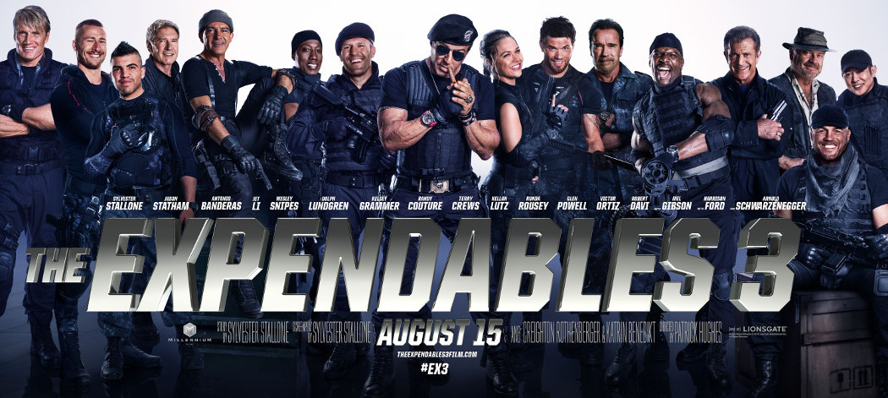
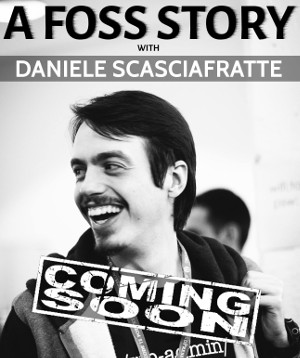
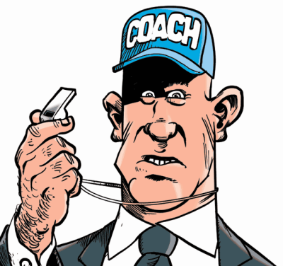
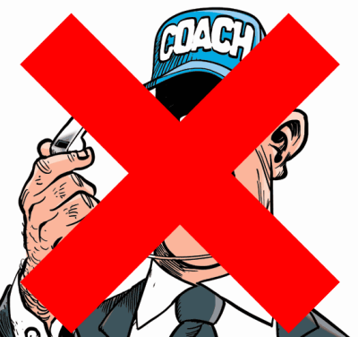
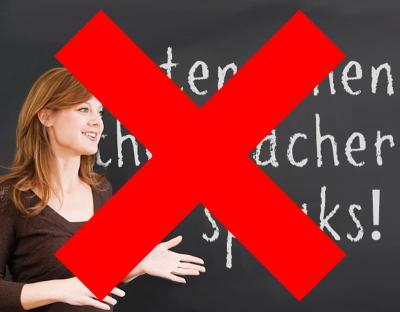
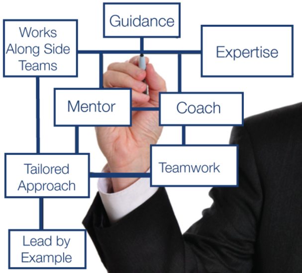
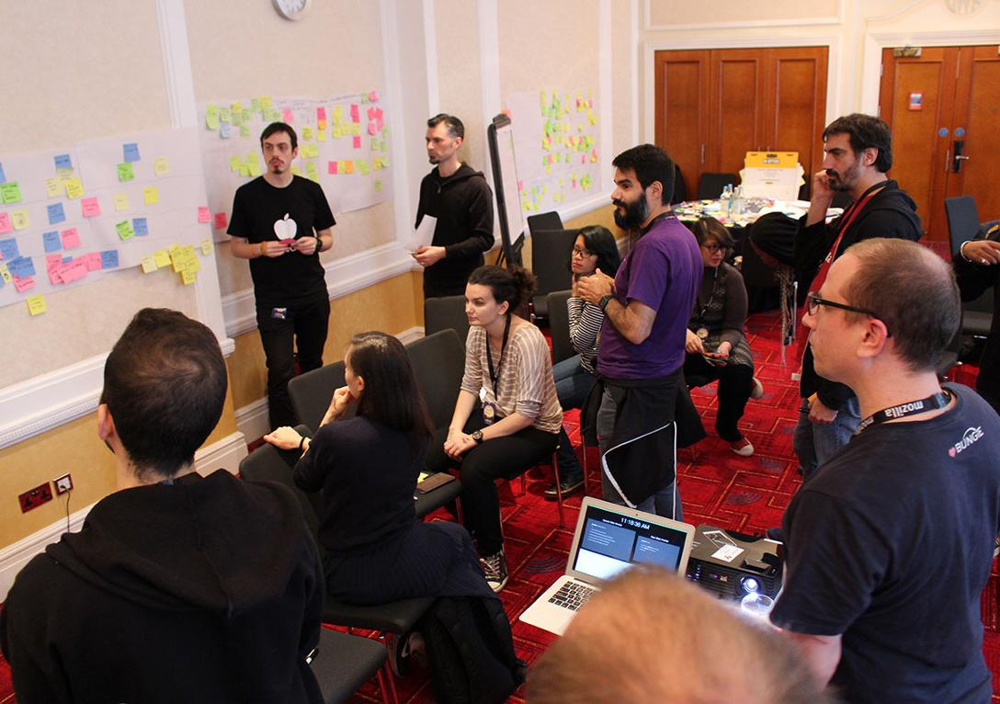
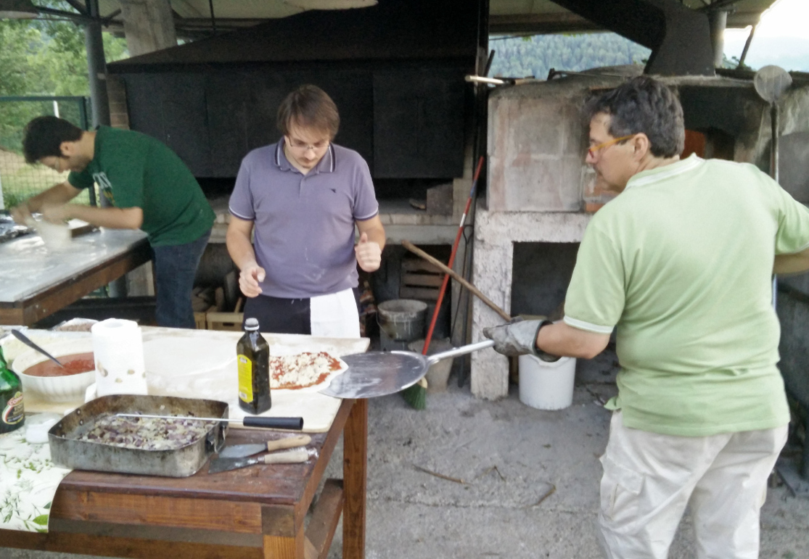
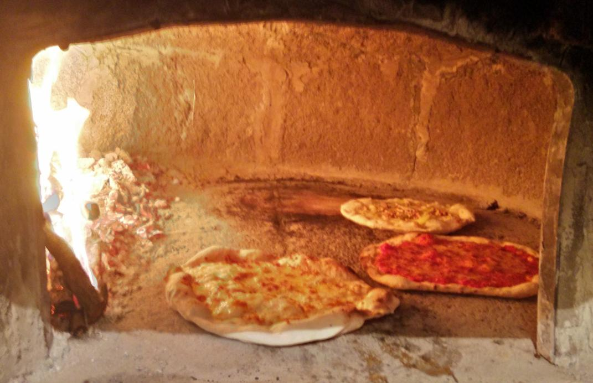
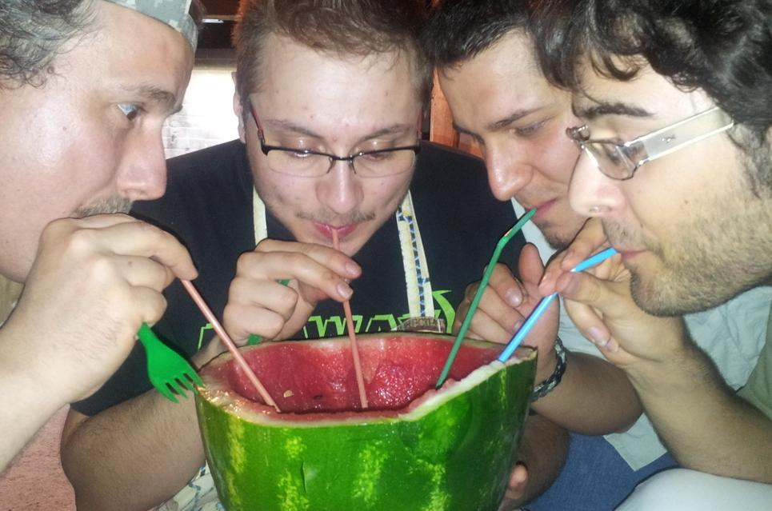

Coaching for Open Source Community
Daniele Scasciafratte
Coaching for Open Source Community

Why Expendables as cover?
Not because of the movie name but for the people
Examples of different kinds of people working together
Everyone has a specific role
And specific useful tools
Everyone is easy to reconize for his role
Everyone "doesn't" have problems in doing their tasks
The boss is a leader
We are not soldiers
We are volunteers
It's a cool name for a movie :-D
Daniele Scasciafratte

Co-Founder & CTO of Codeat
Mozillian, Mozilla Reps, Mozilla Tech Speaker
MozItalians Council - Mozilla Italia Participation Team
WordPress Italia - Project Translator Editor & Core Contributor & WP Roma Co-Organizer
Industria Italiana del Software Libero
Vice President
WikiToLearn, LibreItalia, Italian Linux Society, KDE Italia
What does Open Source mean?
YouTube Playlist of Suse Parody songs
What is Coaching?
  
A boring graph about Coaching

The coaching way
Talk to people with motivation in mind (Guide or Excite)
Learn to delegate and thrust the people around you
Let to the people to talk and ask for help
Coaching is not only to help others but also you
Focus on Skills not the Person
Guide, don't Judge
Create confidence
GROW Model
Goal: what is your goal?
Reality: actual situation with bad and good facts
Options: define few solutions
Wrap Up: recap and define a way
Define the problem, What you want to achieve, Propose few options, Recap and create a plan
Coaching for open source in action

The 🇮🇹 Italian Coaching Way
Team work

Enjoy the results

Enjoy together

Coaching for Open Source community
Everyone works together
Know your community status and the people of your community
You are not a classic member of the community
Define the best way for members to do a communty
Find propositive people during the activities
Ask them to join discussions
Be transparent about decisions
Don't forget to say thank you
You are a volunteer like the other
Organize a schedule before meetings and share it
Prepare activites with examples
Create rules, policies and workflows with the community
Presence on social networks
Ask always for feedbacks
Resources
The Tao of Coaching book by Max Landsberg
A Coaching guide for Mozillians
Connected Devices Contributor Experience Research
From Techie to Boss book by Scott Cromar
Example as results of Coaching
Come analizzare un workflow partecipativo
How to recruit and motivate new volunteers
A Tech talk as speech
How to be a Tech Speakers
Coordinating Meta and Leadership WGs
Improvements for Mozilla Reps portal
Any Question?
Slide: http://mte90.github.io/Talk-Coaching/